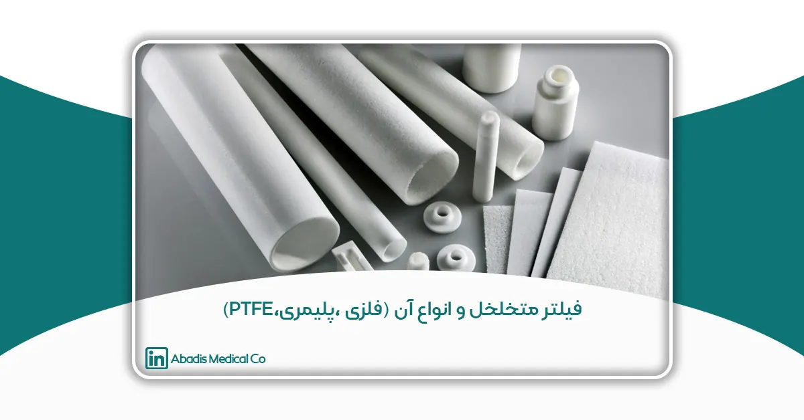

همانطور که در مقاله فیلترهای متخلخل در صنعت پزشکی گفته شد؛ فیلترهای متخلخل اجزای اساسی در سیستمهای فیلتراسیون هستند که برای تصفیه، جداسازی یا به دام انداختن ذرات مایعات و گازها، طراحی شدهاند. این فیلترها به دلیل شبکهای از منافذ یا حفرههای کوچک که امکان عبور مایعات را فراهم میکنند و همزمان ذرات بزرگتر را به دام میاندازند، شناخته میشوند. اندازه و توزیع این منافذ نقشی کلیدی در تعیین کارایی فیلتر و مناسب بودن آن برای کاربردهای خاص دارد.
مکانیسم فیلتراسیون بر اساس چندین اصل استوار است، از جمله دفع ذرات بر اساس اندازه، جذب سطحی و انتشار، که همگی تعیین میکنند که چگونه ذرات به دام افتاده و از مایع جدا میشوند. علاوه بر این، فیلترهای متخلخل میتوانند از مواد بسیار متنوعی ساخته شوند، مانند فلزات، پلیمرها و PTFE (پلیتترافلوئورواتیلن)، که هر کدام ویژگیهای منحصربهفردی را برای محیطها و نیازهای عملیاتی مختلف فراهم میکنند.
با جداسازی مؤثر جامدات از مایعات، فیلترهای متخلخل به بهبود خلوص، ایمنی و کارایی فرآیندهای صنعتی و تجاری کمک میکنند. کاربردهای گسترده و طیف وسیعی از مواد موجود باعث شده است که این فیلترها در صنایعی مانند تولید، بهداشت، حفاظت از محیط زیست و محصولات مصرفی نقش مهمی ایفا کنند.
در این مقاله میخواهیم به صورت تخصصی به انواع فیلترهای متخلخل بر اساس مواد آن بپردازیم.
انواع فیلترهای متخلخل بر اساس مواد
فیلترهای متخلخل میتوانند از مواد مختلفی ساخته شوند که هر یک دارای ویژگیهای منحصر به فردی هستند و آنها را برای کاربردهای خاصی مناسب میسازند. از میان رایجترین مواد مورد استفاده در فیلترهای متخلخل، میتوان به فلزات، پلیمرها و PTFE (پلیتترافلوئورواتیلن) اشاره کرد. در این بخش، هر یک از این مواد را با تمرکز بر ویژگیها، مزایا و کاربردهای کلیدی آنها بررسی خواهیم کرد.
۱. فیلترهای فلزی
فلزات رایج مورد استفاده: فولاد ضد زنگ، برنز، نیکل، تیتانیوم، آلومینیوم، هستلوی.
ویژگیهای فیلترهای فلزی:
- استحکام و دوام بالا: فیلترهای فلزی به دلیل ساختار قوی و مقاومت بالا در برابر سایش و خرابی، برای کاربردهایی که به دوام طولانیمدت نیاز دارند ایدهآل هستند.
- مقاومت در برابر حرارت: فیلترهای فلزی میتوانند دماهای بسیار بالا و پایین را تحمل کنند، و این آنها را برای فرآیندهایی که شامل سیالات یا گازهای دما بالا هستند مناسب میسازد. برخی آلیاژها مانند فولاد ضد زنگ و هستلوی میتوانند دماهای بالای ۱۰۰۰ درجه سانتیگراد را بدون از دست دادن یکپارچگی ساختاری تحمل کنند.
- مقاومت شیمیایی: فلزات خاصی، به ویژه نیکل و تیتانیوم، مقاومت بالایی در برابر مواد شیمیایی خورنده مانند اسیدها، قلیاها و حلالها دارند. این ویژگی باعث میشود که فیلترهای فلزی برای محیطهای شیمیایی مهاجم مناسب باشند، مانند کارخانههای فرآوری شیمیایی.
- قابلیت استفاده مجدد: فیلترهای فلزی اغلب قابل استفاده مجدد هستند. با روشهای تمیزکاری مناسب مانند برگشتشویی یا تمیزکاری التراسونیک، میتوان آنها را بارها استفاده کرد، که در بلندمدت آنها را مقرونبهصرفه میکند.
- اندازه روزنه قابل تنظیم: فیلترهای فلزی میتوانند با اندازههای مختلف منافذ، از ریزمنافذ تا درشتمنافذ، تولید شوند که به آنها امکان میدهد بسته به کاربرد، ذرات ریز یا درشت را فیلتر کنند.
- پایداری مکانیکی: به دلیل استحکام مکانیکی بالا، فیلترهای فلزی حتی در شرایط فشار بالا، شکل و عملکرد خود را حفظ میکنند.
کاربردهای فیلترهای فلزی:
- صنعت نفت و گاز: فیلترهای فلزی، به ویژه آنهایی که از فولاد ضد زنگ و هستلوی ساخته شدهاند، در پالایشگاههای نفت و گاز که دماهای بالا و سیالات خورنده وجود دارند استفاده میشوند. این فیلترها در سیستمهای فیلتراسیون برای پالایش، جداسازی گاز و محافظت از تجهیزات حساس کاربرد دارند.
- فرآوری شیمیایی: در صنعت شیمیایی، فیلترهای فلزی برای فیلتراسیون مایعات و گازها در فرآیندهایی که شامل اسیدها، حلالها و مواد شیمیایی خورنده هستند استفاده میشوند. این فیلترها به تضمین خلوص محصولات نهایی و محافظت از تجهیزات کمک میکنند.
- صنعت هوافضا: در صنعت هوافضا، فیلترهای فلزی در سیستمهای هیدرولیک، فیلتراسیون سوخت و تصفیه هوا به کار میروند تا اطمینان حاصل شود که سیستمهای هواپیما بهدرستی و با ایمنی بالا عمل میکنند.
- صنایع غذایی و نوشیدنی: فیلترهای فلزی در فیلتراسیون مایعاتی مانند روغنها، شربتها و نوشیدنیها استفاده میشوند، به ویژه در مواردی که نیاز به تمیزی و دقت بالا وجود دارد.
۲. فیلترهای پلیمری
پلیمرهای رایج مورد استفاده: پلیپروپیلن (PP)، پلیاتیلن (PE)، پلیوینیلیدین فلوراید (PVDF)، پلیاتر اتر کتون (PEEK)
ویژگیهای فیلترهای پلیمری:
- وزن سبک: فیلترهای پلیمری در مقایسه با فیلترهای فلزی بسیار سبکتر هستند، که آنها را برای حمل و نصب، به ویژه در سیستمهای فیلتراسیون بزرگ، آسانتر میکند.
- مقرونبهصرفه: پلیمرهایی مانند پلیپروپیلن و پلیاتیلن نسبتا ارزان هستند، و این فیلترها را به گزینهای مقرونبهصرفه برای صنایع نیازمند به حجم بالای مواد فیلتراسیون تبدیل میکنند.
- مقاومت در برابر خوردگی:پلیمرها بهطور طبیعی در برابر خوردگی مقاوم هستند، که آنها را برای کاربردهایی که شامل آب یا مواد اسیدی و قلیایی ملایم است، ایدهآل میکند. این فیلترها در محیطهایی که فیلترهای فلزی به مرور زمان خورده میشوند، کاربرد فراوانی دارند.
- انعطافپذیری: فیلترهای پلیمری اغلب از نظر طراحی و کاربرد انعطافپذیرتر هستند. آنها را میتوان به شکلهای پیچیده مانند کارتریجها، غشاها و صفحات درآورد که مناسب برای انواع مختلف سیستمهای فیلتراسیون است.
- ویژگیهای ترموپلاستیک: بسیاری از پلیمرها مانند PP و PE ترموپلاستیک هستند، به این معنا که میتوان آنها را بدون از دست دادن خواص ساختاری، ذوب و مجددا شکل داد. این ویژگی امکان تولید کارآمد و ساخت انواع فرمهای فیلتراسیون را فراهم میکند.
- اندازه روزنه بسیار کوچک برای فیلتراسیون دقیق: فیلترهای پلیمری، به ویژه زمانی که به صورت غشا تولید میشوند، میتوانند فیلتراسیون بسیار ریز تا سطح زیر میکرون ارائه دهند، که آنها را برای کاربردهایی که نیاز به خلوص بالا دارند مناسب میکند.
کاربردهای فیلترهای پلیمری:
- تصفیه آب: فیلترهای پلیمری، بهویژه فیلترهای پلیپروپیلن و پلیاتیلن، به طور گسترده در تصفیه آب شهری، کارخانههای آب شیرینکن و تصفیهخانههای فاضلاب استفاده میشوند. این فیلترها جامدات معلق، باکتریها و سایر آلایندهها را حذف میکنند و آب پاک و ایمن را تضمین مینمایند.
- فرآوری مواد غذایی و نوشیدنی: فیلترهای پلیمری در فرآیندهای فیلتراسیون آبمیوه و محصولات لبنی کاربرد دارند. این فیلترها اطمینان حاصل میکنند که محصولات نهایی بدون ذرات و میکروارگانیسمها هستند و کیفیت و ایمنی را حفظ میکنند.
- پزشکی و داروسازی: در حوزههای بهداشت و داروسازی، فیلترهای پلیمری برای استریل کردن مایعات و گازها استفاده میشوند و از عبور باکتریها و ویروسها جلوگیری میکنند. این فیلترها در تضمین استریلیتی داروهای تزریقی و تمیزی تجهیزات پزشکی نقش حیاتی دارند. فیلترهای متخلخل در کیسههای ساکشن یکبارمصرف نیز جزء حیاتی در مدیریت کارآمد مایعات، استریلیته و ایمنی در مصارف پزشکی هستند. استفاده از UHMWPE، PE و PP بهعنوان مواد فیلتری در فیلترهای متخلخل آبادیس تضمین میکند که کیسههای ساکشن یکبار مصرف آبادیس میتوانند نیازهای محیطهای پزشکی را برآورده کنند؛ و راهحلی قابل اعتماد برای جمعآوری مایعات و جلوگیری از انتشار عفونت را فراهم میکنند. این فیلترها به بهداشت محیط کمک کرده و از کارکنان مراقبتهای بهداشتی و بیماران در برابر آلودگیها محافظت میکنند.
- فرآوری شیمیایی: فیلترهای پلیمری همچنین در کاربردهای مختلف فرآوری شیمیایی که نیاز به مقاومت در برابر خوردگی دارند، به کار میروند، اما محیط شامل دما یا فشار شدید نیست. پلیمرهایی مانند PEEK در محیطهای شیمیایی بسیار سخت به دلیل مقاومت عالی شیمیایی و پایداری حرارتی خود استفاده میشوند.
۳. فیلترهای PTFE(پلیتترافلوئورواتیلن)
PTFE (که بیشتر با نام تجاری تفلون شناخته میشود) یک پلیمر بسیار خاص است که عملکرد فوقالعادهای در محیطهای شدید ارائه میدهد و آن را به گزینهای برتر برای کاربردهای فیلتراسیون خاص تبدیل کرده است.
ویژگیهای فیلترهای PTFE:
- غیرفعال بودن شیمیایی: PTFE نسبت به تقریباً همه مواد شیمیایی، از جمله اسیدهای قوی، بازها و حلالها غیرواکنشی است. این ویژگی آن را برای محیطهایی با مواجهه با مواد شیمیایی مهاجم که مواد دیگر تجزیه میشوند، بسیار مناسب میسازد.
- محدوده دمایی گسترده: فیلترهای PTFE میتوانند دماهای بسیار شدید از -200 درجه سانتیگراد تا +260 درجه سانتیگراد را بدون از دست دادن خواص ساختاری یا فیلتراسیون تحمل کنند. این ویژگی آنها را برای کاربردهای دما بالا در صنایعی مانند فرآوری شیمیایی، داروسازی و اتاقهای تمیز ایدهآل میسازد.
- ضریب اصطکاک پایین: PTFE دارای ضریب اصطکاک بسیار پایینی است، به این معنا که سیالات یا ذرات عبوری کمتر به فیلتر میچسبند یا آن را مسدود میکنند. این ویژگی باعث افزایش کارایی فیلتراسیون و کاهش دفعات نیاز به نگهداری میشود.
- خواص آبگریزی: PTFE به طور طبیعی آبگریز است، به این معنا که آب را دفع میکند. این ویژگی آن را برای فیلتراسیون گازها و سیستمهای تهویه که رطوبت نامطلوب است ایدهآل میکند. همچنین برای فیلتراسیون مایعات غیرآبی مناسب است، زیرا از عبور آب جلوگیری میکند.
- عمر طولانی: فیلترهای PTFE بسیار بادوام هستند و حتی در شرایط سخت در برابر سایش مقاوم هستند. طول عمر بالای آنها آنها را به یک راهحل مقرونبهصرفه برای فرآیندهایی که نیاز به فیلتراسیون با عملکرد بالا در دورههای طولانی دارند تبدیل میکند.
کاربردهای فیلترهای PTFE:
- تجهیزات پزشکی: فیلترهای PTFE به طور گسترده در تجهیزات پزشکی مانند سیستمهای تهویه مکانیکی و ماسکهای جراحی استفاده میشوند که در آنها فیلتراسیون هوای استریل حیاتی است. این فیلترها به محافظت از بیماران و کارکنان بهداشتی در برابر عوامل بیماریزا کمک میکنند.
- اتاقهای تمیز و آزمایشگاهها: در محیطهای بسیار کنترلشده مانند اتاقهای تمیز، آزمایشگاههای داروسازی و تولید نیمهرساناها، فیلترهای PTFE نقش کلیدی در حفظ هوای تمیز و سیستمهای مایع بدون آلاینده دارند.
- فرآیندهای صنعتی پیشرفته: فیلترهای PTFE به طور رایج در تولید شیمیایی، تولید داروسازی و فرآوری مواد غذایی استفاده میشوند، جایی که مقاومت شیمیایی و عملکرد دمای بالا ضروری است. این فیلترها اطمینان حاصل میکنند که مایعات و گازهای خورنده فیلتر میشوند و یکپارچگی فرآیند تولید حفظ میشود.
- فیلتراسیون گاز و تهویه: به دلیل خاصیت آبگریز و مقاومت شیمیایی PTFE، از آن در فیلترهای تهویه و سیستمهای فیلتراسیون گاز استفاده میشود تا بدون اجازه عبور رطوبت یا مایعات، آلایندهها را حذف کند، که آن را به راهحلی ایدهآل برای محیطهای در معرض گازهای خورنده تبدیل میکند.
هر یک از این مواد – فلزات، پلیمرها و– PTFE ویژگیهای منحصر به فردی را به همراه دارند که برای حل چالشهای مختلف فیلتراسیون راهحلهای مناسبی ارائه میدهند. انتخاب ماده به عواملی مانند دمای عملیاتی، سازگاری شیمیایی، نیازهای اندازه منافذ و مقرونبهصرفه بودن سیستم فیلتراسیون بستگی دارد. در محیطهای دما بالا و شیمیایی مهاجم، فیلترهای فلزی برتری دارند، در حالی که پلیمرها گزینهای سبک و مقرونبهصرفه برای کاربردهای دمای پایینتر یا کمتلاشتر هستند. از سوی دیگر، PTFE برای کاربردهای خاصی که خنثی بودن شیمیایی و مقاومت دمایی اهمیت اساسی دارند، به کار میرود.
مکانیسمهای فیلتراسیون در فیلترهای متخلخل
فیلترهای متخلخل از طریق مکانیسمهای مختلفی عمل میکنند که به آنها امکان میدهد آلایندهها را از سیالات (مایعات یا گازها) جدا کنند. انتخاب مکانیسم فیلتراسیون بستگی به عواملی مانند اندازه منافذ، ویژگیهای ماده فیلتر و نوع آلایندههای موجود دارد. درک این مکانیسمها برای انتخاب فیلتر مناسب و ماده مناسب برای کاربردهای خاص بسیار مهم است. در این بخش به بررسی برخی از مهمترین مکانیسمهای فیلتراسیون در فیلترهای متخلخل میپردازیم.
۱.حذف ذرات بر اساس اندازه (الک کردن)
حذف ذرات بر اساس اندازه، که به آن الک کردن نیز میگویند، یکی از مکانیسمهای ساده و رایج فیلتراسیون است. در این فرآیند، ذرات بزرگتر از منافذ فیلتر به صورت فیزیکی مسدود میشوند و از عبور آنها جلوگیری میشود. این فرآیند شبیه به عملکرد یک الک است که اجازه عبور ذرات کوچکتر را میدهد، در حالی که ذرات بزرگتر روی سطح یا داخل فیلتر به دام میافتند.
نحوه عملکرد:
هنگامی که سیال از فیلتر متخلخل عبور میکند، منافذ فیلتر به عنوان موانع فیزیکی عمل میکنند. ذراتی که بزرگتر از منافذ فیلتر هستند، روی سطح یا داخل ساختار فیلتر به دام میافتند. این فرآیند کاملاً مکانیکی است و تعاملات شیمیایی در آن دخالت ندارند. کارایی این مکانیسم به یکنواختی اندازه منافذ ماده فیلتر بستگی دارد.
کاربردها:
- تصفیه آب: حذف جامدات معلق مانند شن، خاک و میکروارگانیسمها از آب.
- فیلتراسیون هوا: به دام انداختن گرد و غبار، گرده و سایر ذرات معلق در هوا.
- فیلترهای روغن: در کاربردهای خودرویی یا صنعتی برای حذف آلایندهها از روغن استفاده میشود.
مواد کلیدی:
- فیلترهای فلزی: فیلترهای از جنس استیل ضدزنگ و نیکل با اندازه منافذ یکنواخت برای محیطهای دما بالا یا شیمیایی مهاجم که نیاز به استحکام مکانیکی دارند، استفاده میشوند.
- فیلترهای پلیمری: پلیمرهایی مانند پلیپروپیلن (PP) و پلیاتیلن (PE) با اندازه منافذ مشخص، در تصفیه آب و فیلتراسیون هوا کاربرد دارند.
۲.جذب سطحی
جذب سطحی فرآیندی است که در آن آلایندهها به سطح ماده فیلتر از طریق تعاملات مولکولی میچسبند. این مکانیسم بهویژه برای حذف ذرات کوچکتر، گازها یا آلایندههای محلول که بهراحتی توسط مکانیسم حذف بر اساس اندازه به دام نمیافتند، مؤثر است. جذب سطحی از طریق نیروهای الکتروستاتیک یا نیروهای واندروالس انجام میشود.
نحوه عملکرد:
آلایندهها در سیال یا گاز به سطح ماده فیلتر از طریق نیروهای بینمولکولی متصل میشوند. جذب سطحی معمولاً در سطح مولکولی انجام میشود و این امر آن را برای به دام انداختن ذرات بسیار ریز، گازها و بخارها مؤثر میکند. هر چه سطح ماده فیلتر بزرگتر باشد، جذب سطحی بیشتری انجام میشود.
کاربردها:
- تصفیه هوا: فیلترهای کربن فعال در تصفیهکنندههای هوا برای جذب گازها، بوها و ترکیبات آلی فرار (VOCs) استفاده میشوند.
- فیلتراسیون شیمیایی: حذف آلایندههای محلول در فرآیندهای تصفیه آب یا پالایش شیمیایی.
- فیلتراسیون پزشکی: به دام انداختن گازها یا ذرات بسیار ریز در کاربردهای پزشکی مانند سیستمهای تحویل بیهوشی.
مواد کلیدی:
- PTFE: پلیتترافلوئورواتیلن (PTFE) به دلیل سطح بالا و مقاومت شیمیایی خود، برای فیلترهایی که بر اساس جذب سطحی عمل میکنند، بهویژه در محیطهای شیمیایی مهاجم مناسب است.
- کربن فعال: به دلیل سطح بسیار بالا برای جذب سطحی، بهطور گسترده در فیلتراسیون گاز و بخارها به کار میرود.
۳.انتشار
انتشار یکی دیگر از مکانیسمهای مهم فیلتراسیون است، بهویژه برای ذرات و مولکولهای بسیار کوچک. در این فرآیند، آلایندهها در منافذ ریز ماده فیلتر نفوذ کرده و در آنجا به دام میافتند. انتشار بهویژه برای ذرات زیر میکرون مؤثر است و در کاربردهای فیلتراسیون تخصصی نقش کلیدی دارد.
نحوه عملکرد:
همزمان با عبور سیال از فیلتر، ذرات کوچک با فیبرها یا ساختار متخلخل ماده فیلتر برخورد میکنند و درون منافذ ریز آن به دام میافتند. هر چه منافذ کوچکتر باشند، فیلتراسیون بر اساس انتشار مؤثرتر خواهد بود (بهویژه برای حذف ذرات ریز یا آئروسلها از گازها یا مایعات).
کاربردها:
- تجهیزات پزشکی: فیلترهایی در دستگاههای تنفسی، کیسه ساکشن یکبارمصرف برای جلوگیری از انتشار باکتریها یا ویروسها.
- تولید نیمهرساناها: حذف نانوذرات یا آلایندهها در تولید تراشههای میکروالکترونیکی.
- تولید دارویی: استریل کردن مایعات با فیلتر کردن باکتریها و ویروسها.
مواد کلیدی:
- PTFE: با اندازه منافذ بسیار کوچک، فیلترهای PTFE برای فیلتراسیون بر اساس انتشار مناسب هستند و بهطور گسترده در محیطهای تمیز و پزشکی استفاده میشوند.
- پلیمرهای میکروپور: مانند پلیوینیلیدین فلوراید (PVDF) که اغلب در فیلتراسیون گاز و هوا استفاده میشود.
۴.عمل موئینگی
عمل موئینگی مکانیسمی است که بیشتر در فیلتراسیون مایعات استفاده میشود. از طریق نیروهای موئینگی، مایعات از منافذ کوچک ماده فیلتر به داخل کشیده میشوند و این فرآیند به جداسازی مایعات از جامدات معلق یا آلایندههای بزرگتر کمک میکند.
نحوه عملکرد:
نیروهای موئینگی در ساختار متخلخل فیلتر مایعات را به داخل ماده میکشند و معمولاً باعث پخش شدن مایع در سراسر فیلتر میشوند. همزمان با حرکت مایع از میان فیلتر، جامدات معلق یا ذرات بزرگتر در منافذ به دام میافتند. این فرآیند توسط کشش سطحی مایع و ساختار منافذ فیلتر هدایت میشود.
کاربردها:
- فیلتراسیون بیولوژیکی: فیلترهایی که در دستگاههای پزشکی یا کاربردهای آزمایشگاهی استفاده میشوند که نیاز به فیلتراسیون مایعات بیولوژیکی دارند.
- سیستمهای تصفیه آب: تصفیه آب خانگی برای حذف ذرات از آب آشامیدنی.
- تجهیزات پزشکی: فیلترهایی که در دستگاههای تشخیصی برای جداسازی مایعات استفاده میشوند.
مواد کلیدی:
- پلیپروپیلن (PP) و پلیاتیلن (PE): این مواد به دلیل خواص آبدوست بودن، معمولاً در سیستمهای فیلتراسیون مبتنی بر ویکینگ استفاده میشوند.
۵.فیلتراسیون عمقی
فیلتراسیون عمقی شامل به دام انداختن آلایندهها در سراسر ضخامت ماده فیلتر است (نه فقط روی سطح آن). این امر امکان فیلتراسیون طیف وسیعی از اندازههای ذرات را فراهم میآورد و ظرفیت بیشتری برای نگهداری آلایندهها (توانایی به دام انداختن آلایندههای بیشتر قبل از نیاز به تعویض فیلتر) را به فیلتر میدهد.
نحوه عملکرد:
در فیلتراسیون عمقی، همزمان با عبور سیال از فیلتر، ذرات در ساختار متخلخل به دام میافتند. ضخامت فیلتر چندین لایه از فیلتراسیون را فراهم میکند که هر کدام قادر به به دام انداختن ذرات با اندازههای مختلف هستند. این مکانیسم امکان فیلتراسیون بیشتر را قبل از نیاز به تعویض یا تمیز کردن فیلتر فراهم میکند.
کاربردها:
- فیلتراسیون نفت و گاز: فیلتراسیون عمقی برای حذف مقادیر زیادی آلایندهها در محیطهای با فشار بالا ایدهآل است.
- تصفیه آب فاضلاب: استفاده در سیستمهای تصفیه آب صنعتی و شهری برای حذف طیف وسیعی از آلایندهها.
- فیلترهای پزشکی: فیلترهای عمقی در فیلتراسیون خون و سایر کاربردهای پزشکی که نیاز به حذف آلایندههای متنوع دارند، استفاده میشوند.
مواد کلیدی:
- فیلترهای فلزی: فیلترهای استیل ضدزنگ به دلیل استحکام و توانایی در تحمل حجمهای بزرگ آلایندهها، معمولاً در فیلتراسیون عمقی استفاده میشوند.
- فیلترهای پلیمری: پلیمرهایی مانند پلیاتر اتر کتون (PEEK) در کاربردهایی که نیاز به مقاومت شیمیایی و توانایی بالای به دام انداختن آلایندهها دارند، استفاده میشوند.
این بخش مکانیسمهای فیلتراسیون را به پایان میرساند. در مرحله بعدی به فرآیند تولید فیلترهای متخلخل میپردازیم.
فرآیندهای تولید فیلترهای متخلخل
در این مرحله، به بررسی فرآیندهای مختلف تولید فیلترهای متخلخل میپردازیم. روش تولید انتخابی میتواند تأثیر قابلتوجهی بر اندازه حفرهها، توزیع آنها، استحکام مکانیکی و عملکرد کلی فیلتر داشته باشد. در اینجا، فرآیندهای کلیدی برای تولید فیلترهای متخلخل فلزی، پلیمری و PTFE (پلیتترافلوئورواتیلن) را بررسی خواهیم کرد.
۱. تولید فیلترهای فلزی متخلخل
فیلترهای فلزی متخلخل با استفاده از چندین تکنیک پیشرفته تولید میشوند که امکان کنترل دقیق بر اندازه و توزیع حفرهها را فراهم میکنند. روشهای رایج عبارتند از:
الف. تفجوشی (Sintering): تفجوشی فرآیندی است که در آن پودرهای فلزی (مانند فولاد ضدزنگ، برنز یا نیکل) به شکل دلخواه فشرده شده و سپس تا دمایی زیر نقطه ذوب فلز گرم میشوند. این باعث میشود که ذرات به یکدیگر متصل شوند و ساختاری جامد با تخلخل کنترلشده ایجاد کنند.
ب. فوم فلزی: فوم فلزی یکی دیگر از تکنیکهای تولید ساختارهای فلزی متخلخل است. این روش شامل ایجاد ماتریسی شبیه به فوم با استفاده از فلزاتی مانند آلومینیوم یا تیتانیوم است که در آن حفرهها توسط فضاهای خالی در فوم شکل میگیرند.
ج. الکتروفورمینگ (Electroforming): الکتروفورمینگ شامل رسوبدهی فلز بر روی یک بستر با استفاده از روشهای الکتروشیمیایی است تا ساختار فلزی متخلخلی بهصورت لایهبهلایه ایجاد شود.
۲. تولید فیلترهای پلیمری متخلخل
فیلترهای پلیمری بهطور معمول با استفاده از فرآیندهایی تولید میشوند که شامل ذوب یا حلکردن پلیمر و سپس تکنیکهایی برای ایجاد ساختار متخلخل هستند. فرآیندهای تولید رایج عبارتند از:
الف. چرخش مذاب (Melt Spinning): چرخش مذاب روشی رایج برای تولید الیاف پلیمری با تخلخل کنترلشده است. پلیمرهایی مانند پلیپروپیلن یا پلیاتیلن ذوب شده و سپس به الیاف تبدیل میشوند که میتوانند در ساختارهای بافتهنشده قرار گیرند یا فشرده شوند تا مواد فیلتر را تشکیل دهند.
ب. وارونگی فاز (Phase Inversion): وارونگی فاز فرآیندی برای ایجاد غشاهای پلیمری با تخلخل کنترلشده است که اغلب برای کاربردهای میکروفیلتراسیون و اولترافیلتراسیون استفاده میشود.
ج. شستشوی پوروجن (Porogen Leaching): شستشوی پوروجن تکنیکی است که در آن پلیمر با پوروجن (مادهای که حفره ایجاد میکند) مخلوط شده و سپس قالبگیری میشود. پس از جامد شدن پلیمر، پوروجن حل شده و از بین میرود و ساختاری متخلخل باقی میماند.
۳. تولید فیلترهای PTFE متخلخل
فیلترهای PTFE (پلیتترافلوئورواتیلن) به دلیل ویژگیهای خاص PTFE، مانند مقاومت شیمیایی و تحمل دماهای بالا، بسیار تخصصی هستند. روشهای رایج برای تولید فیلترهای PTFE متخلخل شامل موارد زیر است:
الف. کشش: کشش رایجترین فرآیند برای ساخت غشاهای PTFE متخلخل است. این تکنیک شامل کشیدن یک ورق جامد از PTFE برای ایجاد ساختاری متخلخل شبیه به تار است.
ب. تفجوشی: تفجوشی برای PTFE نیز قابل استفاده است، مشابه تفجوشی پودرهای فلزی اما در دماهای پایینتر (به دلیل نقطه ذوب پایینتر PTFE).
در طی تولید با روش تف جوشی پودر PTFE فشرده شده و سپس در دمایی کمتر از نقطه ذوب آن گرم میشود و ذرات با یکدیگر ادغام میشوند در حالی که تخلخل حفظ میشود. اندازه ذرات PTFE اندازه حفرهها را تعیین میکند و تفجوشی میتواند اندازههای مختلفی از حفرهها، از ریز تا درشت ایجاد کند.
خلاصه و نتیجهگیری
در این بخش نهایی، نکات کلیدی مطرحشده در طول مقاله را جمعبندی میکنیم و بر اهمیت انتخاب فیلتر متخلخل مناسب برای کاربردهای خاص تأکید خواهیم کرد.
خلاصه نکات کلیدی:
- معرفی فیلترهای متخلخل:
- فیلترهای متخلخل موادی هستند که دارای حفرههای کوچکی هستند که به مایعات (مایعات یا گازها) اجازه عبور میدهند، در حالی که آلایندهها را به دام میاندازند.
- این فیلترها در صنایع مختلفی از جمله بهداشت و درمان، فرآوری شیمیایی و تصفیه آب بسیار حیاتی هستند.
- انواع فیلترهای متخلخل بر اساس مواد:
- فیلترهای فلزی: به دلیل استحکام و مقاومت در برابر حرارت شناخته شدهاند و برای محیطهای خشن مناسب هستند.
- فیلترهای پلیمری: سبک، مقاوم در برابر خوردگی و مقرون بهصرفه هستند و در کاربردهایی مانند تصفیه آب و صنعت پزشکی استفاده میشوند.
- فیلترهای PTFE: غیرفعال از نظر شیمیایی و مقاوم در برابر دمای بالا بوده و در فیلتراسیونهای تخصصی مانند اتاقهای تمیز و دستگاههای پزشکی به کار میروند.
- مکانیسمهای فیلتراسیون:
- مکانیسمهای فیلتراسیون شامل حذف ذرات بر اساس اندازه (الک کردن)، جذب، انتشار، عمل مویینگی و فیلتراسیون عمقی است.
- هر مکانیسم هدف خاصی برای حذف آلایندهها دارد، از ذرات بزرگ گرفته تا ذرات زیرمیکرونی، گازها و بخارها.
- کاربردهای فیلترهای متخلخل:
- فیلترهای متخلخل در صنایع مختلف برای اهدافی مانند تصفیه هوا و آب، استریلسازی دستگاههای پزشکی و پردازش گازهای صنعتی استفاده میشوند.
- مزایا و معایب مواد مختلف:
- فیلترهای فلزی دوام و استحکام بالا دارند، اما ممکن است هزینهبر و در شرایط خاصی مستعد خوردگی باشند.
- فیلترهای پلیمری انعطافپذیر، ارزان و مقاوم در برابر خوردگی هستند، هرچند ممکن است دماهای بسیار بالا را تحمل نکنند.
- فیلترهای PTFE برای کاربردهای بسیار تخصصی به دلیل مقاومت شیمیایی و تحمل دمای بالا ایدهآل هستند.
- روندها و نوآوریها:
- استفاده از مواد پیشرفته مانند نانوالیاف و فیلترهای هوشمند، چاپ سهبعدی برای طراحیهای سفارشی و ادغام فناوری اینترنت اشیا در حال شکلدهی به آینده فیلتراسیون متخلخل هستند.
- پایداری و توسعه فیلترهای زیستتخریبپذیر و قابل استفاده مجدد نیز از روندهای مهم به شمار میرود.
انتخاب فیلتر متخلخل مناسب برای موفقیت هر فرآیند فیلتراسیون بسیار حیاتی است. عواملی مانند سازگاری مواد، شرایط عملیاتی و نوع آلایندهها باید به دقت در نظر گرفته شوند تا عملکرد بهینه فیلتر تضمین شود. هر صنعت یا کاربرد نیازهای خاص خود را دارد، بنابراین درک مکانیسمهای فیلتراسیون و ویژگیهای مواد امری ضروری است.
در صنایعی مانند بهداشت و درمان، داروسازی و حفاظت از محیط زیست، توانایی حذف دقیق آلایندهها میتواند تعیینکننده موفقیت یا شکست باشد. با ادامه پیشرفت در مواد و فناوریها، فیلترهای متخلخل نقش مهمتری در تضمین پاکی هوا، آب و فرآیندهای صنعتی ایفا خواهند کرد.